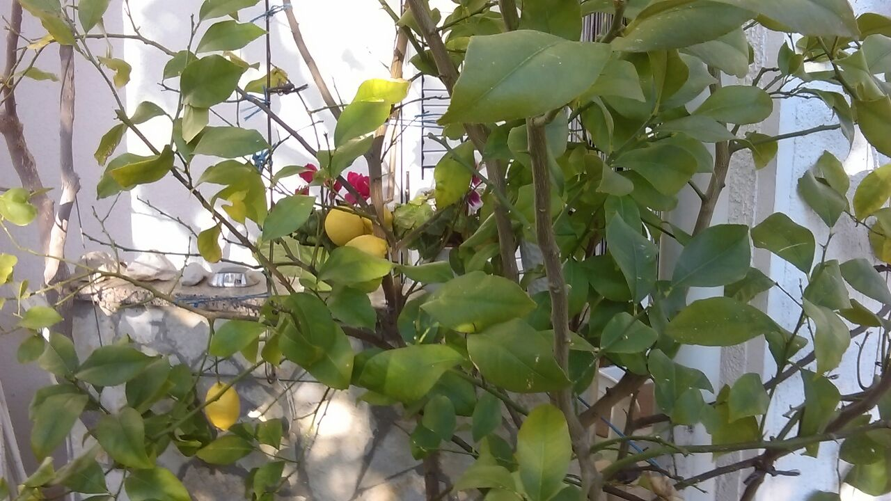
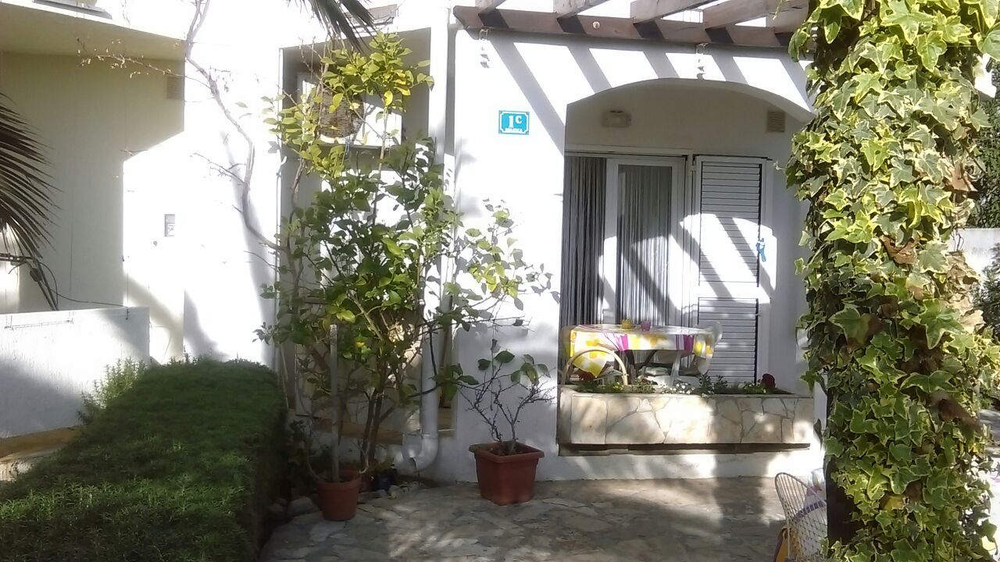
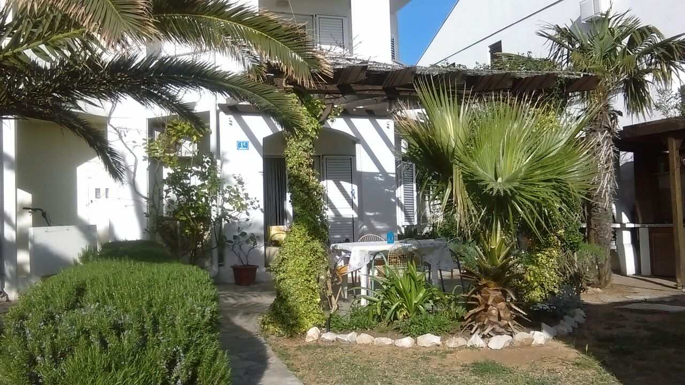

GALERIJA


Apartmani Lončar se nalaze u Staroj Novalji, malom turističkom selu u blizini grada Novalje, poznatoj turističkoj lokaciji. Smješteni su na katu obiteljske kuće, što je garancija tople dobrodošlice i atmosfere, te ugodno provedenih praznika. Manji apartman je najpogodniji za 2 osobe + malo dijete, uključuje boravak spojen sa opremljenom kuhinjom, kupaonu te terasu. Veći apartman prima 3-4 osobe, sastoji se od boravka spojenog sa kuhinjom, kupaone, spavaće sobe te terase. Oba apartmana imaju televizor i klimu. Osim toga, gostima je omogućeno korištenje ljetne kuhinje u dvorištu kuće, te roštilja, a imaju i pristup internetu. Ukoliko ste zainteresirani za obilazak zaljeva Stare Novalje, vlasnik će Vas rado odvesti u brodski obilazak, te Vam ponuditi prijevoz do neke od udaljenijih i napuštenih plaža, do kojih je moguće doći samo pomoću čamca. Apartmani su smješteni na veoma pogodnoj lokaciji, s obzirom na to da je do plaže potrebno svega dvije minute hoda, dok Vam je do poznate plaže Zrće potrebno svega 7 minuta vožnje autom. Tako apartmani Lončar pružaju ujedno i mirnu rezidenciju ukoliko ste došli na odmor sa svojom obitelji, ali isto tako i blizinu svih party destinacija ukoliko ste mladi ljudi željni zabave. Ima li poželjnijeg mjesta za biti? Cijena noćenja za manji apartman iznosi 45 eura, dok je cijena noćenja za veći apartman 55 eura.
  